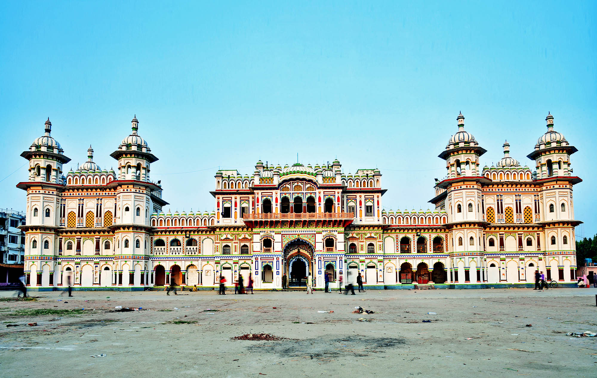
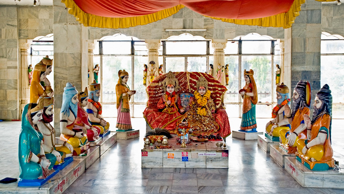
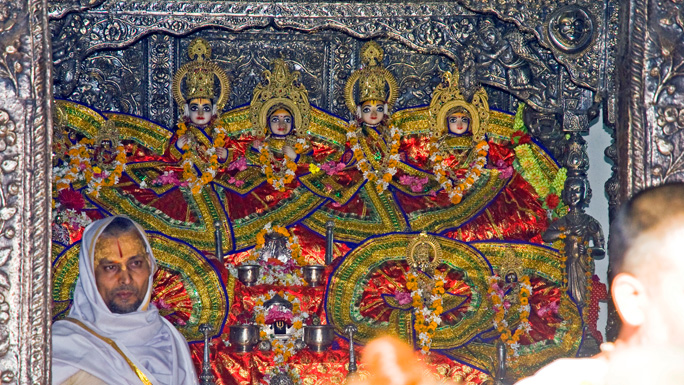
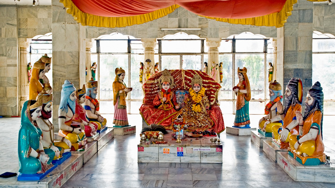
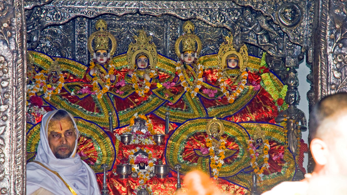

the Terai culture of southern Nepal.
JANAKPUR
Stroll through the ancient Mithila city to experiencethe Terai culture of southern Nepal.
Stroll through the ancient Mithila city to experience the Terai culture of southern Nepal and visit the Ram Janaki Temple in the center of the city that draws allusions to the famous Hindu epic Ramayana.
The city that has been mentioned in Ramanayana as birthplace of Sita, Ram’s consort. As Ram is believed to be the incarnation of Lord Vishnu, Sita is believed to be the incarnation of Goddess Lakshmi as per the great Hindu epic Ramayan.
 It is also believed that it was in Janakpur that Lord Ram and Sita met and were married to each other. Janakpur is also on the holy route of Parikrama (holy circle) carried out by Hindus as a form of worship in Ayodhya, Kashi and Brij in India as well. Another important religious site nearby is Dhanushadham, its reference again dating back to the Ramayan era. It is believed to be the place where the broken remains of the divine Shiva bow fell after Ram broke it to obtain Sita's hand in marriage.
 A fossilized fragment of the broken piece is still believed to present here. Dhanusha offers: religious sightseeing, lush surroundings of trees and groves, semi-rural charm of the Terai suburbs, and the colorful Maithali art and culture. Diverse ethnic groups live in the district of Dhanusha. Yadavs, Teli, Brahmins, Kyastha, Tharu, Musahar, Rajput, and Chhetri are the main inhabitants of these villages. Most are farmers by occupation. The whole region is also considered the center of Maithali culture, therefore Maithali art and culture is predominant in this area. Dhanusadham is in Dhanusha district and Janakpur zone. Janakpur is approximately 390 km and 10-hour drive from Kathmandu. Buses to district headquarter Janakpur city leave from Central Bus Station, Gongabu in Kathmandu. One can also take a 40-minute flight to Janakpur city from Kathmandu. Dhanushadham which is 18 km is an hour-drive from Janakpur. Public transportation services are available to Dhanushadham from the city area.
 It is also believed that it was in Janakpur that Lord Ram and Sita met and were married to each other. Janakpur is also on the holy route of Parikrama (holy circle) carried out by Hindus as a form of worship in Ayodhya, Kashi and Brij in India as well. Another important religious site nearby is Dhanushadham, its reference again dating back to the Ramayan era. It is believed to be the place where the broken remains of the divine Shiva bow fell after Ram broke it to obtain Sita's hand in marriage.
 A fossilized fragment of the broken piece is still believed to present here. Dhanusha offers: religious sightseeing, lush surroundings of trees and groves, semi-rural charm of the Terai suburbs, and the colorful Maithali art and culture. Diverse ethnic groups live in the district of Dhanusha. Yadavs, Teli, Brahmins, Kyastha, Tharu, Musahar, Rajput, and Chhetri are the main inhabitants of these villages. Most are farmers by occupation. The whole region is also considered the center of Maithali culture, therefore Maithali art and culture is predominant in this area. Dhanusadham is in Dhanusha district and Janakpur zone. Janakpur is approximately 390 km and 10-hour drive from Kathmandu. Buses to district headquarter Janakpur city leave from Central Bus Station, Gongabu in Kathmandu. One can also take a 40-minute flight to Janakpur city from Kathmandu. Dhanushadham which is 18 km is an hour-drive from Janakpur. Public transportation services are available to Dhanushadham from the city area.